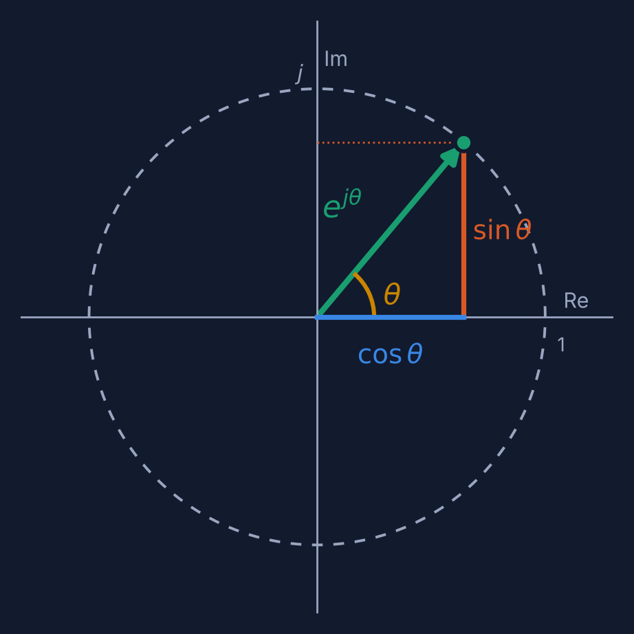
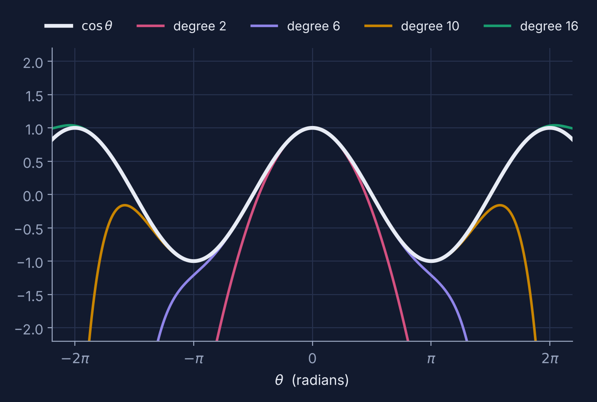
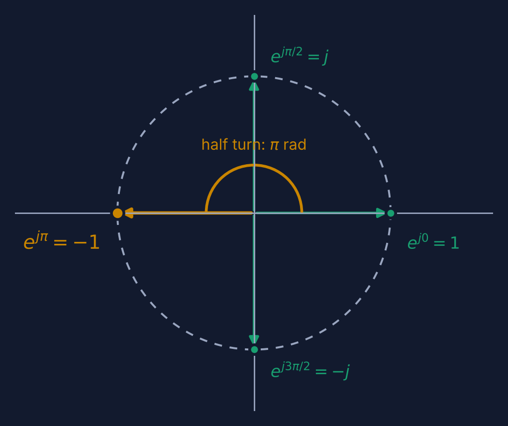
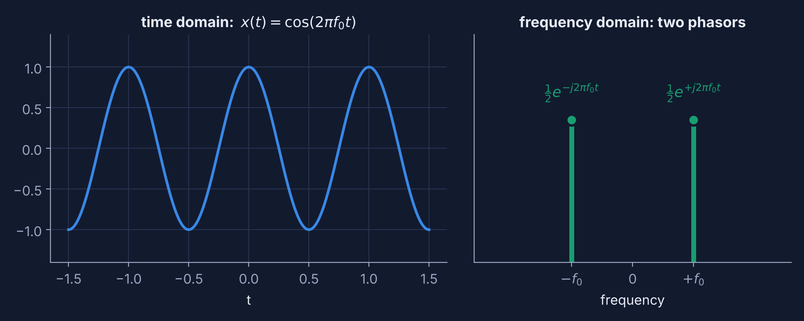
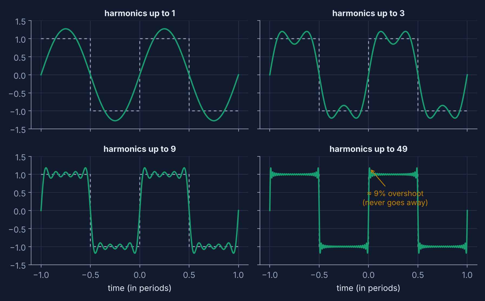
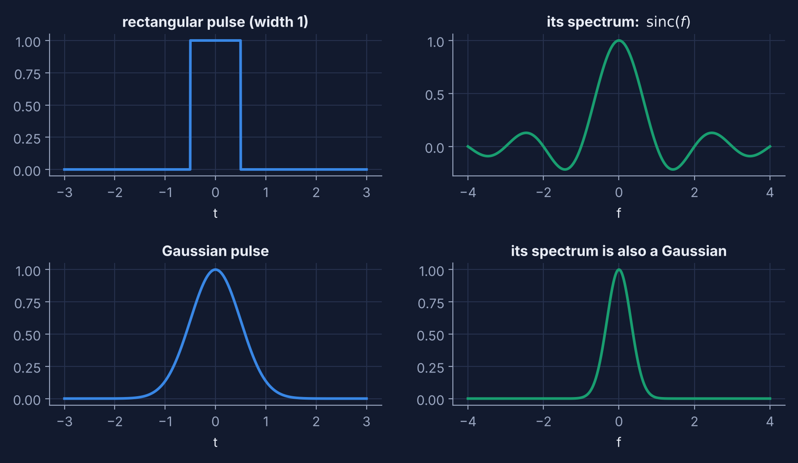
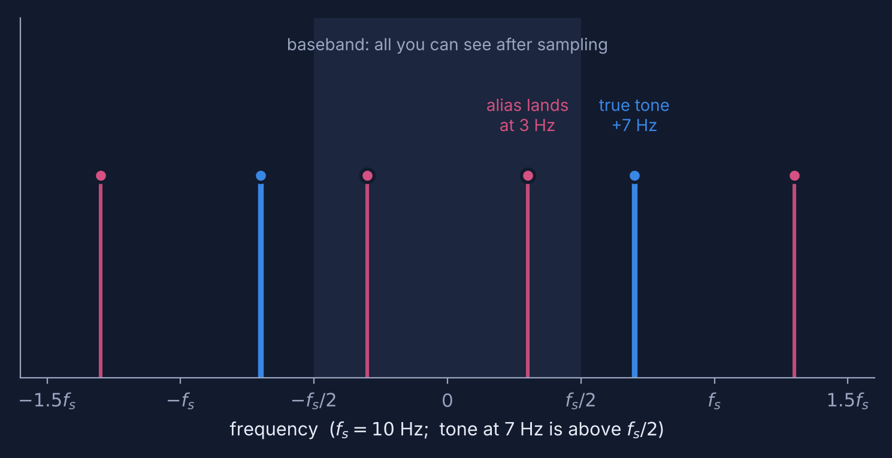

Euler's Identity, Phasors & the Fourier World
One spinning arrow explains why a cosine is a pair of rotating phasors, why every periodic wave is a stack of circles, why filters, radios and the FFT all work the way they do. Start with the unit circle; finish with sampling theory, modulation, and the reason linear systems speak complex exponentials. Everything with a slider is live. Poke it.
That animation is a square wave being built from seven spinning circles. By Section 6 you'll be driving it yourself.
- 1The spinning arrow
- 2Why it's true: a recipe in powers
- 3The identity, and the algebra of turns
- 4Phasors: arrows that spin in time
- 5Roots of unity: hidden orthogonality
- 6Fourier series: waves from circles
- 7Finding the ingredients: wind it up
- 8Time and frequency: a seesaw
- 9Sampling, aliasing and the DFT
- 10Modulation: moving spectra around
- 11Why everything speaks this language
Two conventions. Engineers write \(j=\sqrt{-1}\) because \(i\) is already taken by current, so I'll use \(j\). And the colors mean the same thing everywhere on this page: blue is the real part (cosine), orange is the imaginary part (sine), green is the complex number or phasor itself, yellow marks angles and harmonics.
Three labs play sound. Your volume is your own business, but start low.
The spinning arrow
Basic idea: a number that carries an angle.
Start with something you've known since trigonometry: pick an angle \(\theta\), walk that far around the unit circle from the point \((1,0)\), and you land on \((\cos\theta,\ \sin\theta)\). Now do the one thing that makes this whole page possible: treat the plane as the complex plane, with the horizontal axis for real numbers and the vertical axis for multiples of \(j\). The point becomes the single complex number
That equality is Euler's formula. For now, read the right-hand side as a name: \(e^{j\theta}\) is shorthand for "the point on the unit circle at angle \(\theta\)". Section 2 explains why that name is earned, rather than just a convenient label.

Two things fall out immediately. First, the arrow always has length one, since \(\cos^2\theta+\sin^2\theta=1\), so \(|e^{j\theta}|=1\) for every real \(\theta\). Second, as \(\theta\) grows the arrow spins counterclockwise, and a cosine is nothing more than the shadow of a spinning arrow. Lab 1 lets you hold the arrow and drag it.
The spinning arrow and its shadows
Drag θ slowly and watch the right-hand panel: the blue and orange curves are just the two shadows, unrolled against angle. Then click the π button and read the last line of the readout. That's the identity this page is named after, and we'll prove it properly in Section 3.
Why it's true: a recipe in powers
Where the exponential comes from.
Why would the exponential function, which usually means growth and compound interest, have anything to do with circles? Because the exponential can be defined by a recipe, a power series, and the recipe doesn't care whether the input is real:
Feed it \(x = j\theta\). The powers of \(j\) go around in a four-step cycle, \(j^0=1,\ j^1=j,\ j^2=-1,\ j^3=-j,\) then back to \(1\). So the terms alternate real, imaginary, real, imaginary, and they sort themselves into two families:
Those two brackets are exactly the Taylor series of cosine and sine. Euler's formula isn't a coincidence or a definition; it's the statement that the even terms of the exponential recipe are the cosine and the odd terms are the sine.

Lab 2 draws the recipe as a path. Each term \(\dfrac{(j\theta)^k}{k!}\) is an arrow pointing along \(j^k\): right, up, left, down, right, and so on. Chain the arrows tip to tail and the path spirals in on \(e^{j\theta}\).
Building ejθ one term at a time
Set θ to 180° and drag terms up slowly. Notice that the individual arrows get longer before they get shorter (the bar chart peaks around \(k\approx\theta\)), yet the sum still lands on −1. Then try θ = 360°: the arrows reach out far past the circle, and the cancellations needed are dramatic.
Grad aside: a proof with no series at all
The series proof quietly assumes you may substitute \(j\theta\) into a power series. Here's a cleaner argument. Let \(f(\theta) = (\cos\theta + j\sin\theta)\,e^{-j\theta}\), where \(e^{-j\theta}\) is defined only by its property \(\frac{d}{d\theta}e^{a\theta}=a\,e^{a\theta}\). Then
So \(f\) is constant, and \(f(0)=1\). Hence \(\cos\theta + j\sin\theta = e^{j\theta}\). The same idea says \(e^{j\theta}\) is the unique solution of \(y' = jy,\ y(0)=1\): "velocity is always a quarter-turn ahead of position," which is exactly what uniform circular motion is.
The identity, and the algebra of turns
Half a turn is multiplication by minus one.
Set \(\theta=\pi\), half a turn around the circle. Then \(\cos\pi=-1\) and \(\sin\pi = 0\), so
That's Euler's identity. It is often celebrated for putting five famous constants \((0,1,e,\pi,j)\) in one line, but the real content is geometric: a half turn is multiplication by \(-1\). Zero, one, and \(-1\) aren't exotic here; they are just where the arrow points after a half turn.

This is why multiplication by \(e^{j\theta}\) is rotation. If \(z_1=r_1e^{j\theta_1}\) and \(z_2=r_2e^{j\theta_2}\), the exponent rule \(e^{a}e^{b}=e^{a+b}\) gives
And that single line contains the angle-addition formulas of trigonometry. Multiply out \((\cos a + j\sin a)(\cos b + j\sin b)\) and compare real and imaginary parts with \(e^{j(a+b)}\) and you get \(\cos(a+b)=\cos a\cos b-\sin a\sin b\) and \(\sin(a+b)=\sin a\cos b + \cos a\sin b\) for free, no triangles required.
Multiplying arrows: magnitudes multiply, angles add
Complex numbers in polar form turn rotation and scaling into ordinary multiplication. Hold on to this: everything from here on, phasors, filters, the DFT, modulation, is this one fact applied again and again.
Phasors: arrows that spin in time
From a fixed angle to a signal.
So far \(\theta\) was just an angle. Let it grow with time, \(\theta = \omega t + \varphi\), and the arrow becomes a spinning phasor. Here \(\omega = 2\pi f\) is the angular frequency in radians per second, \(f\) the frequency in hertz, and \(\varphi\) the starting angle. A real sinusoid is the real part (the shadow) of that phasor:
The complex amplitude \(Ae^{j\varphi}\) packs size and starting phase into one number, and the spinning part \(e^{j\omega t}\) is the same for every signal at that frequency, so you can drop it. That bookkeeping is why circuit analysts love phasors: differentiation becomes multiplication by \(j\omega\), integration becomes division, and adding two sinusoids of the same frequency is adding two arrows.
The surprise: negative frequency
Euler's formula also runs backward. Write it for \(+\theta\) and for \(-\theta\) and add:
So a real cosine at frequency \(f_0\) is secretly two phasors, each with half the amplitude, spinning in opposite directions. One has frequency \(+f_0\), the other \(-f_0\). Their imaginary parts cancel at every instant and their real parts add. "Negative frequency" isn't mysterious. It's the clockwise twin you need so that a real signal stays real.

The phasor in motion (with sound)
Real time is slowed down by ×200 so you can see the rotation: a 220 Hz tone really makes 220 turns every second. The scope window shows 20 ms of real time. Sound plays the true frequency.
Tick two counter-rotating phasors and watch the green and violet arrows. Their orange (imaginary) shadows always cancel, leaving a pure blue cosine. Then switch the sound on and drag f: pitch is nothing but how fast that arrow spins.
Grad aside: the analytic signal
Real signals have Hermitian-symmetric spectra, \(X(-f)=X^*(f)\), so the negative-frequency half carries no new information. Throw it away, double the positive half, and the inverse transform gives the analytic signal \(x_a(t)=x(t)+j\,\mathcal{H}\{x\}(t)\), where \(\mathcal H\) is the Hilbert transform (a \(-90^\circ\) phase shift at every frequency). It is the single-arrow version of the signal, with \(|x_a(t)|\) the envelope and \(\arg x_a(t)\) the instantaneous phase. This is exactly the object that quadrature (I/Q) receivers build in hardware, and we'll meet it again in Section 10.
Roots of unity: the hidden orthogonality
Why different frequencies don't interfere.
Before frequencies and signals, one clean geometric fact. Slice the circle into \(N\) equal parts and call the first step \(w = e^{j2\pi/N}\). The \(N\) points \(1, w, w^2,\dots,w^{N-1}\) are the \(N\)th roots of unity: each satisfies \(w^N=1\). Now ask what they add up to. Taking steps of \(k\) positions at a time:
For \(k\) not a multiple of \(N\) the arrows form a closed polygon (or star) and return to the start, so the sum is exactly zero. A geometric series proves it: the sum is \(\dfrac{1-e^{j2\pi k}}{1-e^{j2\pi k/N}} = 0\). For \(k=0\) every arrow is \(1\) and they stack in a line of length \(N\).
This is orthogonality. Multiply one spinning exponential by the conjugate of another and average: if they spin at different rates the product keeps rotating and averages to zero; if they spin at the same rate you get a constant. That is the only reason Fourier analysis can pull one frequency out of a mixture without the others leaking in.
Roots of unity: do the arrows close?
Leave \(N=8\) and step k from 0 upward. Right is the chain of \(N\) arrows laid tip to tail: for \(k=0\) it's a straight line of length 8, for every other \(k\) it closes into a polygon. Now set \(k=8\): it's a multiple of \(N\), so the sum jumps back to \(N\). The set of \(N\) frequencies you can tell apart is built into the circle.
Grad aside: the DFT matrix is unitary
Define \(F_{km} = \tfrac{1}{\sqrt N}e^{-j2\pi km/N}\). The orthogonality sum above says exactly \(F^{H}F = I\): the DFT is a unitary change of basis, so it preserves energy (Parseval). Because \(F^2\) is the "reverse the index" permutation, \(F^4=I\) and the eigenvalues of \(F\) can only be \(\pm1,\pm j\): the four quarter-turn landmarks from Figure 3 again.
Fourier series: waves from circles
Any periodic signal is a chorus of phasors.
Take any signal \(x(t)\) that repeats every \(T\) seconds, and let \(\omega_0 = 2\pi/T\). Fourier's claim is that it can be written as a sum of phasors spinning at whole-number multiples of \(\omega_0\), called harmonics:
Each term is one arrow with its own radius \(|c_n|\), starting angle \(\arg c_n\), and speed \(n\omega_0\). For real \(x(t)\) the terms at \(+n\) and \(-n\) are conjugate twins, and the pair is a plain cosine: \(2|c_n|\cos(n\omega_0 t + \arg c_n)\).
A square wave of unit height has an especially simple recipe, using only odd harmonics and only the sine part:
Draw each term as a circle whose center rides on the tip of the previous one, and the height of the last tip is the sum. That's an epicycle machine, the picture the hero animation was running. Lab 6 hands you the controls and lets you listen.
Epicycles: build a wave from spinning circles (with sound)
Start with harmonics = 1: one circle, a plain sine. Now creep upward and watch the corners sharpen. With the sound on, a lone sine is a pure, hollow tone; add harmonics and it becomes buzzy and bright. That brightness is the spectrum: the timbre of an instrument is its set of \(c_n\). Switch to Triangle: its harmonics shrink like \(1/n^2\), so it sounds mellow even with lots of terms.

Grad aside: Parseval, convergence and windows
Because the exponentials are orthogonal, Parseval's relation holds: average power in time equals the sum of the squared magnitudes of the coefficients, \(\tfrac1T\!\int_0^T |x|^2\,dt=\sum_n |c_n|^2\). Convergence is in the \(L^2\) sense for any finite-energy period, pointwise at points of continuity (Dirichlet's conditions), and overshoot appears at jumps (Gibbs). The usual engineering remedy is to taper the coefficients with a window, such as Fejér's triangular taper (which averages the partial sums) or a Lanczos sigma factor, trading edge sharpness for the removal of ringing.
Finding the ingredients: wind it up
How to measure a frequency component, and the leap to the Fourier transform.
We know signals are made of phasors. How do we find how much of each is in there? Multiply the signal by a spinning arrow that runs backward at the frequency you're testing, then average:
Here's why it works. The component of \(x\) that spins at exactly \(n\omega_0\) gets un-spun by \(e^{-jn\omega_0 t}\) and becomes constant; averaging keeps it. Every other component keeps rotating at some leftover rate and averages to zero. That's the orthogonality from Section 5 in continuous clothes.
Let the period grow without bound and the harmonics crowd together into a continuum. The sum becomes an integral and the coefficients become a function of frequency, the Fourier transform:
The "wind it up" picture: draw \(x(t)\,e^{-j2\pi f_w t}\) as a path in the complex plane, which means wrapping the signal around the origin at a winding frequency \(f_w\). The balance point of that path is \(X(f_w)\) (up to scaling). When \(f_w\) matches a frequency in the signal, the wrapped path becomes lopsided and its balance point moves away from the origin.
The winding machine: finding frequencies by wrapping
Signal: x(t) = cos(2πf₁t) + A₂·cos(2πf₂t), observed for 8 seconds.
Press Scan. For most winding frequencies the path is a symmetric flower centered on the origin and the green balance point sits at zero. Whenever the winding frequency hits \(f_1\) or \(f_2\) the flower tips over and the point jumps out, and the right panel draws the spectrum as it goes. Peaks have height \(A/2\) because a real cosine is split between \(+f\) and \(-f\).
Grad aside: Fourier analysis as projection
On \(L^2[0,T]\) with the inner product \(\langle x,y\rangle = \tfrac1T\int_0^T x\,y^*\,dt\), the exponentials \(e_n(t)=e^{jn\omega_0t}\) are an orthonormal basis, and \(c_n=\langle x,e_n\rangle\) is literally the projection of \(x\) onto \(e_n\). The transform on the whole line is the limit of this picture, but \(e^{j2\pi ft}\) isn't itself in \(L^2(\mathbb R)\), which is why a pure tone's transform is a Dirac delta, a distribution, and why Plancherel's theorem (\(\int|x|^2dt=\int|X|^2df\)) is stated for the extension of \(\mathcal F\) from \(L^1\cap L^2\) to all of \(L^2\).
Time and frequency: a seesaw
Squeeze one side and the other spreads.
Time and frequency are two descriptions of the same signal, and they sit on a seesaw. A pulse that is narrow in time must contain a wide range of frequencies, because sharp features need many harmonics to build. A long, lazy pulse needs only a narrow sliver of the spectrum. Two pairs you should know by heart:

A short dictionary makes the transform a toolkit instead of an integral. Writing \(x(t)\leftrightarrow X(f)\):
| In time | In frequency | Why you care |
|---|---|---|
| Delay: \(x(t-t_0)\) | \(e^{-j2\pi f t_0}X(f)\) | delay is a phase ramp; magnitude unchanged |
| Multiply by \(e^{j2\pi f_0 t}\) | \(X(f-f_0)\) | mixing moves a spectrum (Section 10) |
| Squeeze: \(x(at)\) | \(\tfrac1{|a|}X(f/a)\) | the seesaw itself |
| Convolve: \(x*h\) | \(X(f)\,H(f)\) | filters become multiplication (Section 11) |
| Multiply: \(x\,y\) | \(X*Y\) | windowing blurs the spectrum |
| Differentiate: \(x'(t)\) | \(j2\pi f\,X(f)\) | derivatives boost high frequencies |
Pulse width vs. bandwidth
Drag width down: the pulse gets thin and its spectrum swells outward. Tick decibels on the Rectangle to expose the side lobes, and flip to the Gaussian, where they vanish. Finally pick Tone burst: the same Gaussian spectrum reappears, but centered at \(\pm f_0\). That's the shift rule in the table. Multiplying by a tone moved the spectrum.
The seesaw is exact. Define the spread of \(x\) in time and \(X\) in frequency by the RMS widths \(\sigma_t\) and \(\sigma_f\) of \(|x|^2\) and \(|X|^2\). Then
with equality only for the Gaussian. This is the same inequality as Heisenberg's, with nothing quantum about it: it is a statement about waves.
Grad aside: where the bound comes from
Take \(x\) with unit energy and zero mean time and frequency. Since \(\mathcal F\{x'\}=j2\pi f X\), Plancherel gives \(\sigma_f^2 = \tfrac{1}{4\pi^2}\|x'\|^2\) and \(\sigma_t^2=\|t\,x\|^2\). Cauchy–Schwarz gives \(\|t x\|\,\|x'\|\ge |\langle t x, x'\rangle|\ge \tfrac12\), because \(\operatorname{Re}\langle tx,x'\rangle=\tfrac12\int t\,(|x|^2)'dt=-\tfrac12\|x\|^2\) after integrating by parts. Equality needs \(x'\propto t\,x\), whose solution is a Gaussian. The practical consequence is the time–frequency tradeoff every spectrogram faces: a short window localizes in time but blurs frequency, and vice versa.
Sampling, aliasing and the DFT
What happens when a computer looks at a continuous world.
A computer sees a signal only at instants \(t = n/f_s\), where \(f_s\) is the sampling rate. Here's the beautiful and slightly alarming result: sampling in time makes copies in frequency. If \(x(t)\) has spectrum \(X(f)\), the sampled signal has spectrum
a copy of the original spectrum centered at every multiple of \(f_s\). If the original lives within \(|f|

You've seen aliasing in movies: the wagon wheel that appears to turn slowly backward. A camera is a sampler. In phasor language it's simple: each frame the arrow has turned by \(2\pi f_0/f_s\) radians, but your eye can only tell the turn modulo a full circle, and takes the smallest equivalent angle.
Aliasing: sampling, folding, and the wagon wheel
Keep \(f_s=10\) and sweep \(f_0\) upward. Below 5 Hz the magenta line is hidden behind the blue one: no aliasing. Cross 5 Hz and the magenta curve (the slower sine that fits the same dots) appears and now decreases as the tone rises. The strobe view on the right shows the sampled arrow stepping backward. At \(f_0=f_s=10\) Hz the apparent frequency is exactly zero: the wheel freezes.
From the roots of unity to the FFT
Feed \(N\) samples to the discrete Fourier transform and it asks the Section 5 question at \(N\) frequencies:
Computed naively that's \(N^2\) multiplications. The FFT cuts it to about \(N\log_2 N\) by exploiting the roots of unity: because \(w^{k+N/2} = -w^k\), a size-\(N\) transform splits into two size-\(N/2\) transforms (even and odd samples) plus cheap combining steps, and it recurses.
Grad aside: Poisson summation, interpolation, and sampling on purpose
The replicas come from the Poisson summation formula: an impulse train in time has an impulse train in frequency, and multiplication in time is convolution in frequency (Section 8's table). Perfect reconstruction is convolution with the sinc kernel (Whittaker–Shannon interpolation), which is non-causal and therefore approximated in practice by an anti-alias filter before the sampler and a reconstruction filter after it. There's an RF twist, too. The sampling theorem needs \(f_s>2B\) where \(B\) is the bandwidth, not the highest frequency. A 10 MHz-wide signal centered at 2 GHz can be undersampled at a modest rate, if the band lands cleanly between replicas; the aliasing is then a deliberate mixer. This is bandpass (IF) sampling.
Modulation: moving spectra around
Radio is phasor engineering.
The table in Section 8 hid a gem: multiply a signal by \(e^{j2\pi f_c t}\) and its whole spectrum slides up by \(f_c\). That's all a radio transmitter does. To make this precise, write any real passband signal around a carrier \(f_c\) as
The complex function \(g(t)\), the complex envelope, is a slowly moving arrow in the I/Q plane that rides on top of the fast carrier rotation. All the information is in how \(g\) moves. Different modulations are different ways of moving it:
- AM: \(g=1+m\cos(2\pi f_m t)\). The arrow breathes in and out along the real axis; the spectrum is a carrier plus two sidebands at \(f_c\pm f_m\), each of relative height \(m/2\).
- DSB-SC: \(g=\cos(2\pi f_m t)\). The arrow swings through the origin, flipping the carrier's sign each time; the carrier line disappears.
- SSB: \(g=e^{j2\pi f_m t}\). The arrow just spins at \(f_m\), so there is only one sideband: a single tone at \(f_c+f_m\).
- FM: \(g=e^{\,j\beta\sin(2\pi f_m t)}\). The arrow keeps its length and wobbles in angle; its spectrum is the Bessel family \(s(t)=\sum_n J_n(\beta)\cos\!\big(2\pi (f_c+nf_m)t\big)\), where \(\beta=\Delta f/f_m\).
Modulation lab: watch the envelope arrow, hear the result
The carrier is a real, audible tone at fc, and the message is fc/fm times slower. What you see is exactly what you hear, just drawn over two message periods.
Start on AM with the sound on: it's a tone with a tremolo at \(f_m\). Switch to SSB. The tremolo vanishes and the pitch steps up by \(f_m\); the envelope arrow is now a pure circle. Switch to FM and raise the depth: the arrow stays on the unit circle and sweeps an arc. Watch the spectrum grow sidebands whose heights follow Bessel functions, and the sound turns from vibrato into something metallic.
Grad aside: Carson's rule and the image problem
FM's spectrum is formally infinite, but the Bessel terms \(J_n(\beta)\) fall off rapidly once \(|n|>\beta+1\), which is Carson's rule: \(B\approx 2(\Delta f+f_m)=2f_m(\beta+1)\). On the receive side, down-converting by multiplying with a real \(\cos(2\pi f_{LO}t)\) produces both \(f_c-f_{LO}\) and \(f_c+f_{LO}\), plus the mirror image from \(f_{LO}-f_c\). A quadrature mixer that multiplies by the complex \(e^{-j2\pi f_{LO}t}\) (two real mixers 90° apart, giving I and Q) shifts the spectrum once, but only as well as the I and Q paths are matched in gain and phase. Any mismatch leaks a scaled mirror copy, so "I/Q imbalance" in a receiver is, mathematically, an error in conjugate symmetry.
Why everything speaks this language
The reason this page exists.
Why decompose signals into complex exponentials at all? Why not wavelets, or square pulses, or something friendlier? Because of one property of linear time-invariant (LTI) systems, the model for filters, amplifiers, cables, rooms, and most of electronics. Feed a spinning arrow into one, with impulse response \(h(t)\):
The output is the same arrow, spinning at the same rate, merely scaled and rotated by a single complex number, \(H(j\omega)\). We say that complex exponentials are the eigenfunctions of every LTI system, and \(H(j\omega)\), the frequency response, is the eigenvalue. A filter can't change a tone's frequency; it can only change its size and its phase.
That is the master key. To predict what any system does to any signal: break the signal into phasors (Sections 6–7), multiply each by \(H\), then add the results back up. Convolution in time has become multiplication in frequency. Take the simple RC low-pass filter, \(RC\,y'+y=x\). Substituting \(x=e^{j\omega t},\ y=He^{j\omega t}\) gives
A filter can only scale and rotate a phasor
Time is shown in slow motion. Blue is the input, green the output.
Slide the frequency from low to high. At low frequency the green arrow shadows the blue one nearly exactly (the filter passes it). Near \(\omega=\omega_c\) it has shrunk to 71% and lags by 45°. At high frequency it's tiny and lags by almost 90°. The two arrows always spin together at the same rate, and that is the eigenfunction property you can watch.
The map, in one table
| Idea | One-line version |
|---|---|
| Euler's formula | \(e^{j\theta}=\cos\theta+j\sin\theta\): a number with an angle; cosine is its shadow |
| Multiplication | magnitudes multiply, angles add; so \(e^{j\pi}=-1\) |
| Phasor / negative frequency | \(\cos\omega t\) is two counter-rotating phasors at \(\pm\omega\) |
| Orthogonality | \(\sum_m e^{j2\pi km/N}\) is \(N\) or \(0\): frequencies don't interfere |
| Fourier series / transform | measure each phasor by un-spinning and averaging; \(X(f)=\int x\,e^{-j2\pi ft}dt\) |
| Duality | narrow in time \(\Leftrightarrow\) wide in frequency; \(\sigma_t\sigma_f\ge 1/4\pi\) |
| Sampling | sampling replicates the spectrum every \(f_s\); above \(f_s/2\) you alias |
| Modulation | multiply by \(e^{j2\pi f_ct}\): slide the spectrum; the information is the envelope arrow |
| LTI systems | \(e^{j\omega t}\to H(j\omega)e^{j\omega t}\): filters scale and rotate phasors |
Grad aside: where to go next
Laplace. Let the arrow also grow or shrink: \(e^{st}\) with \(s=\sigma+j\omega\) is a spiral. Every LTI system also has \(e^{st}\) as an eigenfunction, and \(H(s)\) with its poles and zeros explains stability and transients, the Fourier transform being the slice \(s=j\omega\). The z-transform is the discrete-time twin, with \(z=re^{j\omega}\) and the unit circle playing the role of the frequency axis. OFDM, the heart of Wi-Fi and LTE/5G, is Section 5 used as a modulator: \(N\) data symbols ride on \(N\) orthogonal subcarriers \(e^{j2\pi kn/N}\), and an inverse FFT builds the transmit signal. Time-frequency analysis (STFT, wavelets, Gabor frames) is the engineering response to the uncertainty principle of Section 8. And spectral estimation (windowing, periodograms, Welch, MUSIC) is the art of doing Section 7 honestly on finite, noisy data.